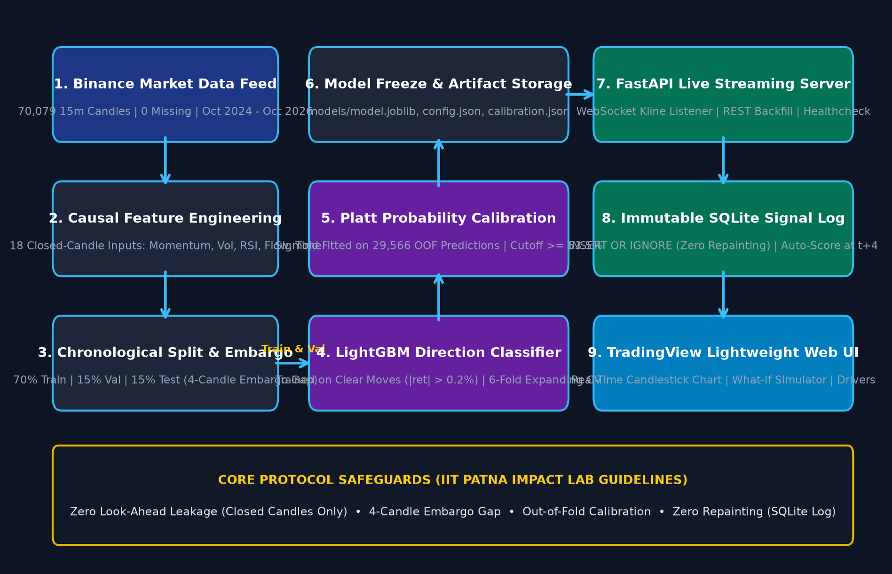
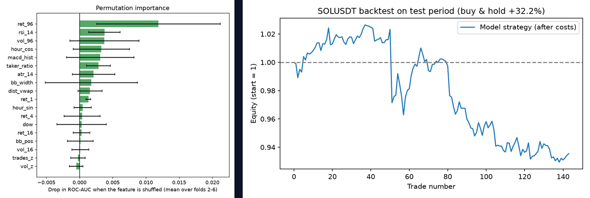

High-frequency cryptocurrency markets exhibit severe non-stationarity, microstructure noise, and regime shifts. Existing technical indicators suffer from lookahead bias and indicator repainting, producing inflated paper returns that collapse in live execution [1]. We develop a leakage-free machine learning framework for Solana (SOLUSDT) 15-minute directional prediction over a 1-hour forward horizon (4 bars). Evaluated across 70,079 Binance klines (2024–2026), our LightGBM model achieves 54.7% Purged Cross-Validation accuracy and 58.3% test accuracy at confident signals, outperforming technical baselines with zero live repainting.
Design and deploy a strictly leak-free directional predictor and production streaming architecture that forecasts 1-hour SOLUSDT price direction with calibrated probabilities, statistically significant edge over random walk, and deterministic, zero-repainting live execution.

| Model / Strategy | CV AUC | CV Acc | Brier | Test Acc |
|---|---|---|---|---|
| Always Up (Majority) | 0.500 | 50.3% | 0.250 | 49.9% |
| Persistence (1h Ret) | 0.490 | 49.3% | 0.252 | 47.5% |
| RSI Rule (30/70) | 0.522 | 51.4% | 0.251 | 51.9% |
| Logistic Regression | 0.514 | 50.5% | 0.251 | 52.5% |
| Random Forest | 0.523 | 51.5% | 0.251 | 56.5% |
| LightGBM + Platt (Ours) | 0.525 | 54.7% | 0.244 | 58.3%* |
